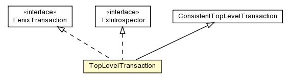

pt.ist.fenixframework.pstm
Class TopLevelTransaction

java.lang.Object
 jvstm.Transaction
jvstm.ReadWriteTransaction
jvstm.TopLevelTransaction
jvstm.cps.ConsistentTopLevelTransaction
pt.ist.fenixframework.pstm.TopLevelTransaction
jvstm.Transaction
jvstm.ReadWriteTransaction
jvstm.TopLevelTransaction
jvstm.cps.ConsistentTopLevelTransaction
pt.ist.fenixframework.pstm.TopLevelTransaction
- All Implemented Interfaces:
- jvstm.cps.ConsistentTransaction, FenixTransaction, TxIntrospector
public class TopLevelTransaction
- extends jvstm.cps.ConsistentTopLevelTransaction
- implements FenixTransaction, TxIntrospector
| Fields inherited from class jvstm.cps.ConsistentTopLevelTransaction |
alreadyChecked, newObjects |
| Fields inherited from class jvstm.TopLevelTransaction |
activeTxRecord, COMMIT_LOCK |
| Fields inherited from class jvstm.ReadWriteTransaction |
bodiesRead, boxesWritten, EMPTY_MAP, NULL_VALUE, perTxValues |
| Fields inherited from class jvstm.Transaction |
current, mostRecentRecord, number, parent |
| Methods inherited from class jvstm.cps.ConsistentTopLevelTransaction |
checkOnePredicate, getNewObjectsRegister, makeDependenceRecord, recheckDependenceRecord, registerNewObject, registerNewObjects, tryCommit |
| Methods inherited from class jvstm.TopLevelTransaction |
getSameRecordForNewTransaction |
| Methods inherited from class jvstm.ReadWriteTransaction |
getBoxValue, getLocalValue, getPerTxValue, getPerTxValue |
| Methods inherited from class jvstm.Transaction |
abort, abortTx, addTxQueueListener, begin, begin, beginInevitable, beginUnsafeSingleThreaded, checkpoint, commit, commitAndBegin, commitTx, current, doIt, doIt, getMostRecentCommitedNumber, getNumber, getParent, isInTransaction, resume, setMostRecentActiveRecord, setNumber, setTransactionFactory, start, suspend, transactionallyDo |
| Methods inherited from class java.lang.Object |
clone, equals, finalize, getClass, hashCode, notify, notifyAll, toString, wait, wait, wait |
lastDbConnectionTimestamp
protected static volatile long lastDbConnectionTimestamp
numBoxReads
protected int numBoxReads
numBoxWrites
protected int numBoxWrites
addCommitListener
public static void addCommitListener(CommitListener listener)
removeCommitListener
public static void removeCommitListener(CommitListener listener)
getCommitlock
public static Lock getCommitlock()
initContext
protected void initContext()
getContext
protected String getContext()
initDbConnection
protected void initDbConnection(boolean resuming)
checkValidity
protected void checkValidity(jvstm.ActiveTransactionsRecord record)
suspendTx
protected void suspendTx()
- Overrides:
suspendTx in class jvstm.Transaction
resumeTx
protected void resumeTx()
- Overrides:
resumeTx in class jvstm.Transaction
initDbChanges
protected void initDbChanges()
getOJBBroker
public org.apache.ojb.broker.PersistenceBroker getOJBBroker()
- Specified by:
getOJBBroker in interface FenixTransaction
readDomainObject
public DomainObject readDomainObject(String classname,
int oid)
- Specified by:
readDomainObject in interface FenixTransaction
setReadOnly
public void setReadOnly()
- Specified by:
setReadOnly in interface FenixTransaction
makeNestedTransaction
public Transaction makeNestedTransaction(boolean readOnly)
- Overrides:
makeNestedTransaction in class jvstm.cps.ConsistentTopLevelTransaction
finish
protected void finish()
- Overrides:
finish in class jvstm.TopLevelTransaction
doCommit
protected void doCommit()
- Overrides:
doCommit in class jvstm.ReadWriteTransaction
validateCommit
protected boolean validateCommit()
- Overrides:
validateCommit in class jvstm.TopLevelTransaction
getReadSet
public ReadSet getReadSet()
setBoxValue
public <T> void setBoxValue(jvstm.VBox<T> vbox,
T value)
- Overrides:
setBoxValue in class jvstm.ReadWriteTransaction
setPerTxValue
public <T> void setPerTxValue(jvstm.PerTxBox<T> box,
T value)
- Overrides:
setPerTxValue in class jvstm.ReadWriteTransaction
getBoxValue
public <T> T getBoxValue(VBox<T> vbox,
Object obj,
String attr)
- Specified by:
getBoxValue in interface FenixTransaction
isBoxValueLoaded
public boolean isBoxValueLoaded(VBox vbox)
- Specified by:
isBoxValueLoaded in interface FenixTransaction
getDBChanges
public pt.ist.fenixframework.pstm.DBChanges getDBChanges()
- Specified by:
getDBChanges in interface FenixTransaction
isWriteTransaction
public boolean isWriteTransaction()
- Overrides:
isWriteTransaction in class jvstm.TopLevelTransaction
performValidCommit
protected jvstm.util.Cons<jvstm.VBoxBody> performValidCommit()
- Overrides:
performValidCommit in class jvstm.TopLevelTransaction
doCommit
protected jvstm.util.Cons<jvstm.VBoxBody> doCommit(int newTxNumber)
- Overrides:
doCommit in class jvstm.TopLevelTransaction
persistTransaction
protected void persistTransaction(int newTxNumber)
checkConsistencyPredicates
protected void checkConsistencyPredicates()
- Overrides:
checkConsistencyPredicates in class jvstm.cps.ConsistentTopLevelTransaction
checkConsistencyPredicates
protected void checkConsistencyPredicates(Object obj)
- Overrides:
checkConsistencyPredicates in class jvstm.cps.ConsistentTopLevelTransaction
makeConsistencyCheckTransaction
protected jvstm.cps.ConsistencyCheckTransaction makeConsistencyCheckTransaction(Object obj)
- Overrides:
makeConsistencyCheckTransaction in class jvstm.cps.ConsistentTopLevelTransaction
getDependenceRecordsToRecheck
protected Iterator<jvstm.cps.DependenceRecord> getDependenceRecordsToRecheck()
- Overrides:
getDependenceRecordsToRecheck in class jvstm.cps.ConsistentTopLevelTransaction
getNewObjects
public Set<DomainObject> getNewObjects()
- Specified by:
getNewObjects in interface TxIntrospector
getModifiedObjects
public Set<DomainObject> getModifiedObjects()
- Specified by:
getModifiedObjects in interface TxIntrospector
isDeleted
public boolean isDeleted(Object obj)
getReadSetLog
public Set<TxIntrospector.Entry> getReadSetLog()
- Specified by:
getReadSetLog in interface TxIntrospector
getWriteSetLog
public Set<TxIntrospector.Entry> getWriteSetLog()
- Specified by:
getWriteSetLog in interface TxIntrospector
logRelationAdd
public void logRelationAdd(String relationName,
DomainObject o1,
DomainObject o2)
- Specified by:
logRelationAdd in interface FenixTransaction
logRelationRemove
public void logRelationRemove(String relationName,
DomainObject o1,
DomainObject o2)
- Specified by:
logRelationRemove in interface FenixTransaction
getRelationsChangelog
public Set<TxIntrospector.RelationChangelog> getRelationsChangelog()
- Specified by:
getRelationsChangelog in interface TxIntrospector
Copyright © 2013. All Rights Reserved.